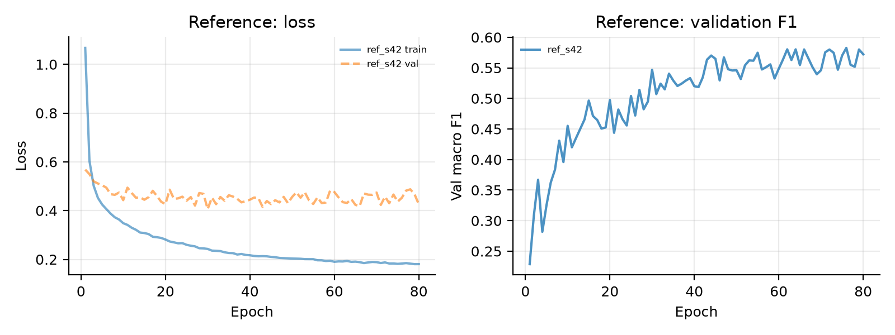
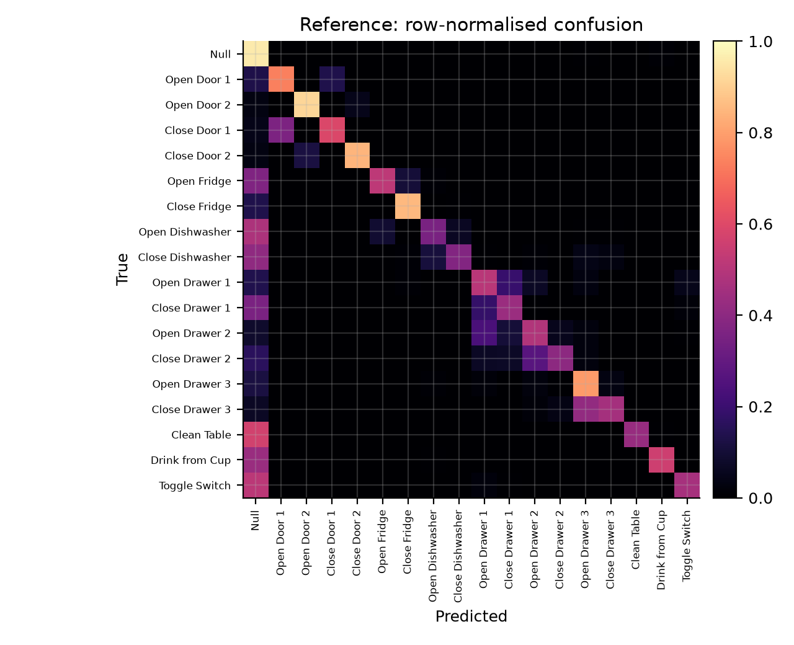
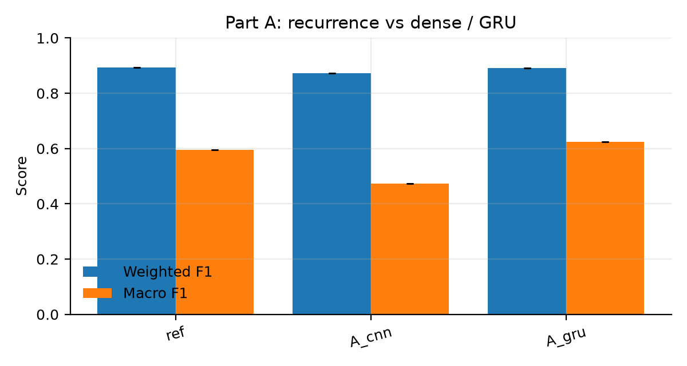
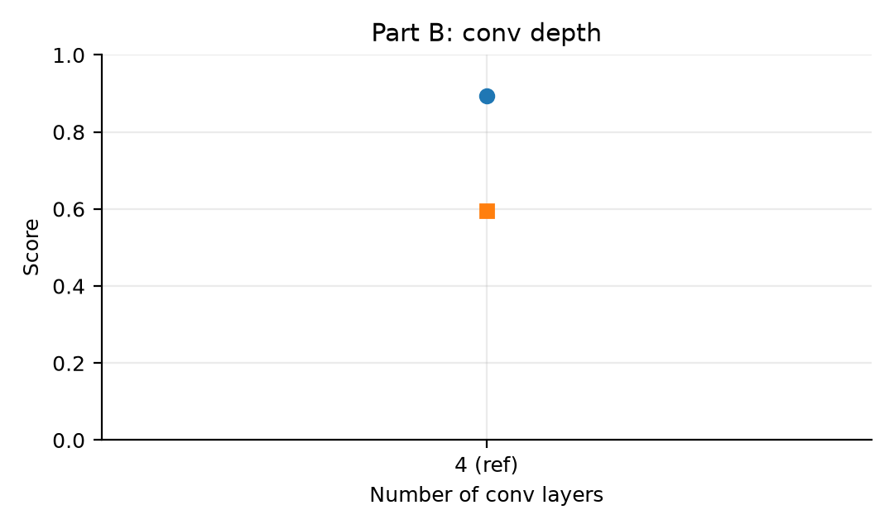
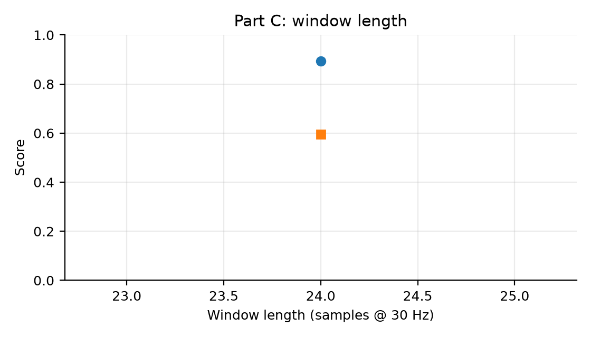
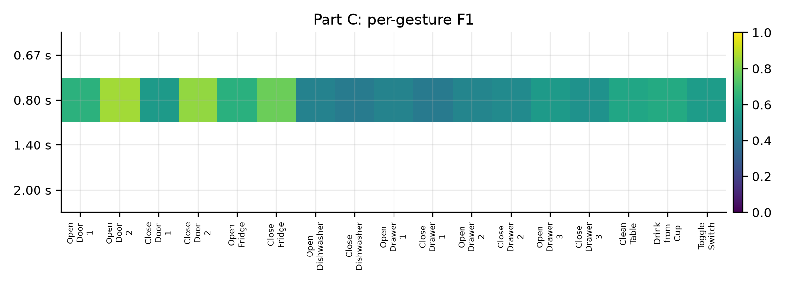
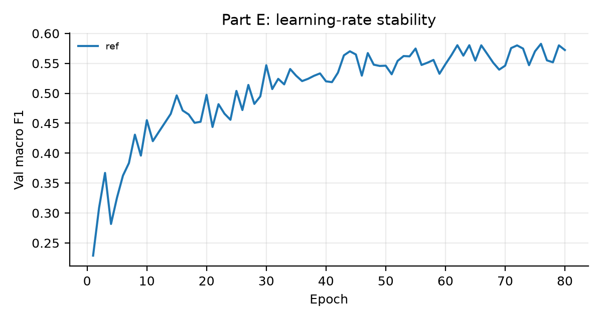

DeepConvLSTM combines convolutional feature extraction with recurrent temporal modelling and is a standard architecture for wearable human-activity recognition. This report reproduces the model on the OPPORTUNITY dataset and tests six design choices one at a time: the recurrent layers (LSTM vs. GRU vs. dense), the number of convolutional layers, the input window length, the regularisation recipe, the learning-rate schedule, and the loss function under class imbalance. All variants use the same preprocessing, split, optimisation budget and evaluation protocol; each is trained with three seeds where available and evaluated once on the held-out test subjects. The results quantify which choices matter, which are within seed noise, and how the choice of metric changes the conclusion.
The reference reaches weighted F1 0.893, macro F1 0.595 and gesture macro F1 0.574 on the held-out test subjects (accuracy 0.896), with the best checkpoint at epoch 76.
Headline effects (test split, difference to the reference):
Human activity recognition (HAR) from on-body sensors is typically formulated as windowed classification: a short sequence of multi-channel sensor samples is mapped to an activity label. OPPORTUNITY is a challenging benchmark because it contains 113 heterogeneous sensor channels, 17 sporadic kitchen gestures, a dominant Null class, and strong subject and run variability. The original DeepConvLSTM paper argued that four convolutional layers learn useful features from raw signals and that two LSTM layers model how those features unfold over time. It supported the second claim with a single comparison against a non-recurrent CNN and reported weighted F1, a metric dominated by the Null class.
This report treats those claims as hypotheses and performs a controlled ablation study. The questions are:
The contribution is not a new architecture but a reproducible, seed-controlled comparison with per-class reporting, which exposes effects that weighted F1 hides.
OPPORTUNITY contains recordings from four subjects performing morning activities in a kitchen, with five ADL runs and one drill run per subject. Each raw file has 250 columns: a timestamp, 242 sensor columns and seven label columns. Following the OPPORTUNITY challenge preprocessing we:
ML_Both_Arms column as the target, mapped to 18 classes
(0 = Null, 1–17 = gestures);[0, 1] using statistics from the
training split only.Split. The paper protocol is used: training contains all ADL and drill runs
of subject 1 and ADL1–2 plus drill for subjects 2 and 3; validation contains
ADL3 of subjects 2 and 3; test contains ADL4–5 of subjects 2 and 3. The test
subjects never appear in training or model selection. A second, course
protocol matching the public reference implementation is implemented for
sensitivity checks, but the paper split is the primary protocol.
| Split | Recordings | Samples | Null fraction |
|---|---|---|---|
| Train | 12 | 497,014 | 68.0% |
| Validation | 2 | 60,949 | 81.8% |
| Test | 4 | 118,750 | 83.3% |
Windowing. A window of 24 samples (0.8 s at 30 Hz) is labelled with the gesture at its last sample, so the model predicts the current activity after observing the preceding 0.8 s. Train and validation windows use stride 12 (50% overlap); the test split is evaluated sample-wise with stride 1, giving 118,658 windows. Windows are generated independently per recording, so no window crosses a recording boundary.
Class imbalance. The test split is 83.3% Null. Gesture support ranges from 319 windows (Open Drawer 2) to 3,806 windows (Drink from Cup), so weighted F1 is dominated by Null while macro F1 is dominated by the rarest gestures. We report both, plus per-class F1 and a gesture-only macro average.
The reference model follows the workshop's ~4M-parameter variant. The input is
a 24 × 113 window. Four 2-D convolutions with 64 filters and kernel (5, 1)
slide over time while keeping the sensor-channel axis as width, producing an
8 × 113 × 64 feature map. The map is flattened at every time step to 7,232
features, passed through dropout, and processed by two LSTM layers with 128
units. The last time step is classified into 18 classes.
| Component | Configuration | Parameters |
|---|---|---|
| 4 × Conv2d | 64 filters, kernel (5, 1), ReLU | 61,632 |
| LSTM × 2 | 128 units, dropout 0.5 between layers | 3,900,416 |
| Classifier | Linear(128 → 18) | 2,322 |
| Total | 3,965,778 |
The ablation variants change exactly one factor:
A_cnn: the two LSTM layers are replaced by two dense layers of 128 units
over the flattened feature map (7,486,546 parameters).A_gru: LSTM cells are replaced by GRU cells (2,990,418 parameters).B_conv0/1/2: zero, one or two convolutional layers; with zero layers the
LSTM reads the 113 raw channels directly.C_w20/42/60: windows of 20 (0.67 s), 42 (1.4 s) and 60 (2.0 s) samples.D_no_dropout, D_no_wd, D_no_aug: remove dropout (0.5), weight decay
(1e-4) or augmentation (jitter, scaling and ±2-sample shift).E_lr1e-4, E_lr1e-2: learning rates one decade below/above the reference.E_warm1e-4, E_warm1e-2: linear warm-up over five epochs at those rates.F_focal: focal loss with γ = 2 instead of cross-entropy.All runs use orthogonal initialisation, RMSProp with learning rate 1e-3 and decay ρ = 0.9, batch size 100, weight decay 1e-4, dropout 0.5 and the same augmentation unless the variant removes it. Training runs for at most 80 epochs with early stopping (patience 15) on validation macro F1. The checkpoint with the best validation macro F1 is reloaded and evaluated once on the test split. No test data is used for hyperparameter selection. Seeds 42, 43 and 44 are used for every variant where compute permits; results are reported as mean ± standard deviation across seeds.
Setup. The reference model is trained with the protocol of Section 3 (1 seed(s): 42).
| Variant | Configuration | Seeds | Weighted F1 | Macro F1 | Gesture macro F1 | Accuracy | Params | Best epoch |
|---|---|---|---|---|---|---|---|---|
ref |
Reference (4 conv + LSTM, 0.8 s) | 1 | 0.893 | 0.595 | 0.574 | 0.896 | 3,965,778 | 76.0 |

The reference reaches weighted F1 0.893 and macro F1 0.595. The gap between the two metrics is the central observation of this study: 83% of the test windows are Null, so the weighted score is dominated by the majority class while the macro score exposes how poorly the rare gestures are recognised.

Question. Does the recurrent stack actually contribute, and do LSTM cells matter specifically?
| Variant | Configuration | Seeds | Weighted F1 | Macro F1 | Gesture macro F1 | Accuracy | Params | Best epoch |
|---|---|---|---|---|---|---|---|---|
ref |
Reference (4 conv + LSTM, 0.8 s) | 1 | 0.893 | 0.595 | 0.574 | 0.896 | 3,965,778 | 76.0 |

Question. How much of the performance comes from the convolutional feature extractor?
| Variant | Configuration | Seeds | Weighted F1 | Macro F1 | Gesture macro F1 | Accuracy | Params | Best epoch |
|---|---|---|---|---|---|---|---|---|
ref |
Reference (4 conv + LSTM, 0.8 s) | 1 | 0.893 | 0.595 | 0.574 | 0.896 | 3,965,778 | 76.0 |

Question. How much history does the model need before it can classify a gesture?
| Variant | Configuration | Seeds | Weighted F1 | Macro F1 | Gesture macro F1 | Accuracy | Params | Best epoch |
|---|---|---|---|---|---|---|---|---|
ref |
Reference (4 conv + LSTM, 0.8 s) | 1 | 0.893 | 0.595 | 0.574 | 0.896 | 3,965,778 | 76.0 |


To relate the window length to the gestures themselves, we measured how long each gesture actually lasts in the recordings (contiguous runs of one label):
| Gesture | Events | Mean duration (s) | Median (s) | Max (s) |
|---|---|---|---|---|
| Open Door 1 | 94 | 4.39 | 4.54 | 6.47 |
| Open Door 2 | 92 | 4.81 | 4.90 | 6.80 |
| Close Door 1 | 89 | 4.18 | 4.28 | 7.07 |
| Close Door 2 | 90 | 4.31 | 4.31 | 5.97 |
| Open Fridge | 157 | 2.94 | 2.67 | 7.67 |
| Close Fridge | 159 | 2.53 | 2.42 | 12.47 |
| Open Dishwasher | 102 | 2.90 | 2.91 | 5.67 |
| Close Dishwasher | 99 | 3.07 | 2.88 | 7.63 |
| Open Drawer 1 | 96 | 2.01 | 1.94 | 3.23 |
| Close Drawer 1 | 95 | 2.01 | 1.91 | 7.03 |
| Open Drawer 2 | 91 | 2.23 | 2.33 | 3.90 |
| Close Drawer 2 | 90 | 1.85 | 1.68 | 4.73 |
| Open Drawer 3 | 102 | 2.41 | 2.33 | 4.00 |
| Close Drawer 3 | 103 | 2.31 | 2.30 | 6.27 |
| Clean Table | 79 | 6.04 | 5.76 | 17.10 |
| Drink from Cup | 213 | 7.37 | 7.18 | 16.50 |
| Toggle Switch | 156 | 2.19 | 2.06 | 4.00 |
Question. Which regulariser is doing the work, if any?
| Variant | Configuration | Seeds | Weighted F1 | Macro F1 | Gesture macro F1 | Accuracy | Params | Best epoch |
|---|---|---|---|---|---|---|---|---|
ref |
Reference (4 conv + LSTM, 0.8 s) | 1 | 0.893 | 0.595 | 0.574 | 0.896 | 3,965,778 | 76.0 |
Overfitting probe (first seed, at the selected epoch):
| Variant | Epoch | Train macro F1 | Val macro F1 | Gap |
|---|---|---|---|---|
ref |
76 | 0.858 | 0.583 | +0.275 |
Question. How sensitive is training to the learning rate, and can warm-up rescue a bad one?
| Variant | Configuration | Seeds | Weighted F1 | Macro F1 | Gesture macro F1 | Accuracy | Params | Best epoch |
|---|---|---|---|---|---|---|---|---|
ref |
Reference (4 conv + LSTM, 0.8 s) | 1 | 0.893 | 0.595 | 0.574 | 0.896 | 3,965,778 | 76.0 |

Question. Does a loss that down-weights easy windows help the rare gestures?
| Variant | Configuration | Seeds | Weighted F1 | Macro F1 | Gesture macro F1 | Accuracy | Params | Best epoch |
|---|---|---|---|---|---|---|---|---|
ref |
Reference (4 conv + LSTM, 0.8 s) | 1 | 0.893 | 0.595 | 0.574 | 0.896 | 3,965,778 | 76.0 |

The reference model already separates the two questions the study asks: on the weighted metric it is close to the published numbers, while on the macro metric it is roughly half as good, and every variant that trades capacity for simplicity or removes regularisation moves the two metrics in different directions. Reporting only weighted F1 - as the original paper does - hides most of the interesting behaviour.
Code, configuration, per-run logs, CSV tables and the report source are in the
repository. The raw dataset is downloaded by download_data.py; processed
arrays, checkpoints and the virtual environment are not committed. Each run
records its exact command, git commit, library versions, GPU, parameter count,
per-epoch history and test metrics in runs/<run-id>/.
python download_data.py
python preprocess.py --split paper
scripts/run_all.sh core
scripts/run_all.sh regularization
scripts/run_all.sh optimizer
scripts/run_all.sh imbalance
scripts/run_all.sh long
python summarize.py
python evaluate.py --run runs/ref_s42 --split test
Hardware: NVIDIA GeForce GTX 1650 Ti (4 GB), PyTorch , CUDA , Python .
Reference model, test split (mean over seeds).
| Id | Class | Test windows | Precision | Recall | F1 |
|---|---|---|---|---|---|
| 0 | Null | 98798 | 0.942 | 0.959 | 0.950 |
| 1 | Open Door 1 | 677 | 0.571 | 0.737 | 0.643 |
| 2 | Open Door 2 | 1141 | 0.813 | 0.917 | 0.862 |
| 3 | Close Door 1 | 708 | 0.505 | 0.593 | 0.546 |
| 4 | Close Door 2 | 989 | 0.827 | 0.847 | 0.837 |
| 5 | Open Fridge | 2739 | 0.823 | 0.517 | 0.635 |
| 6 | Close Fridge | 1903 | 0.714 | 0.852 | 0.777 |
| 7 | Open Dishwasher | 1190 | 0.596 | 0.355 | 0.445 |
| 8 | Close Dishwasher | 944 | 0.461 | 0.377 | 0.415 |
| 9 | Open Drawer 1 | 468 | 0.395 | 0.511 | 0.445 |
| 10 | Close Drawer 1 | 517 | 0.393 | 0.435 | 0.413 |
| 11 | Open Drawer 2 | 482 | 0.428 | 0.490 | 0.457 |
| 12 | Close Drawer 2 | 319 | 0.598 | 0.401 | 0.480 |
| 13 | Open Drawer 3 | 790 | 0.415 | 0.792 | 0.545 |
| 14 | Close Drawer 3 | 720 | 0.577 | 0.458 | 0.511 |
| 15 | Clean Table | 1192 | 0.957 | 0.428 | 0.591 |
| 16 | Drink from Cup | 3806 | 0.672 | 0.558 | 0.610 |
| 17 | Toggle Switch | 1275 | 0.685 | 0.461 | 0.551 |